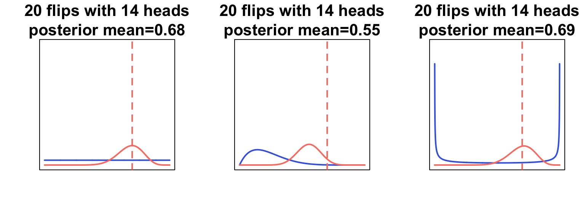
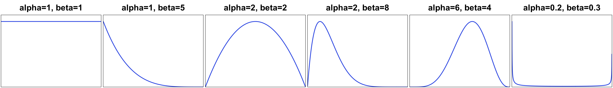
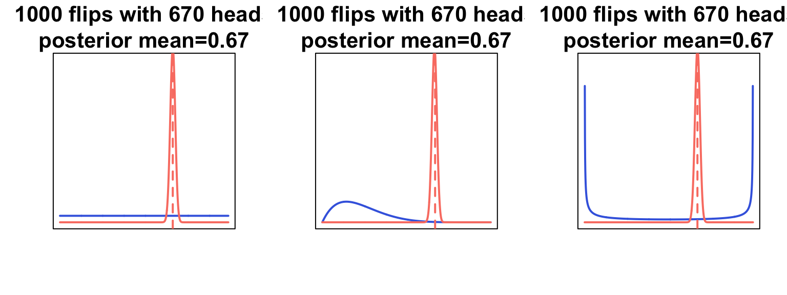
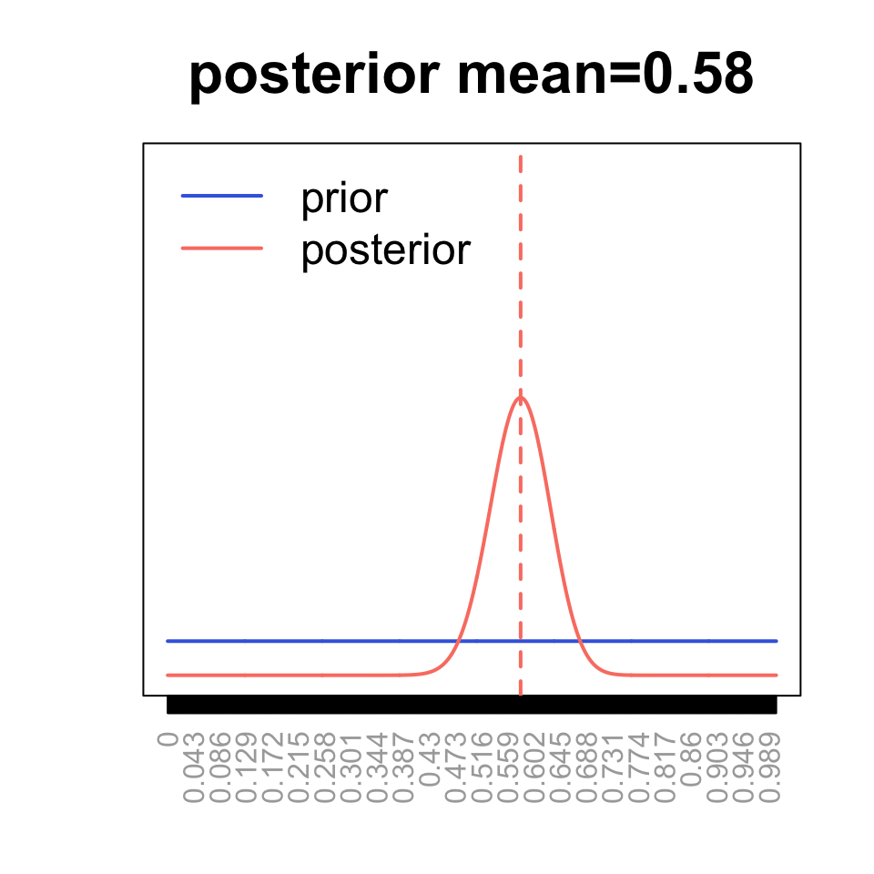

DATA 352/551: Modeling and Simulation
Content on this lecture are based on
Doing Bayesian Data Analysis (Kruschke), Chapters 5 and 6
Think Bayes: Bayesian Statistics Made Simple (Downey), Chapter 4.
🪙 You want to know the probability of head (denoted \(p\)) for a potentially biased coin.
You flip the coin \(n\) times and record the number of heads you get (denoted \(X\)). For example, you get 14 heads out of 20 flips, then \(n=20\) and \(X=14\).
Statistical set-up
Data:
Parameter:
How do you estimate \(p\)?
This simple model has a lot of real life applications. \(p\) can represent: success probability of a drug; probability that a patient receiving a certain treatment will survive after 1 year; probability that a person will vote for a certain candidate; etc.
In non-Bayesian inference, the parameter (\(p\) in this case) is fixed (but unknown). The goal is to make a “best” educated guess at this value, based on data.
In Bayesian inference, the parameter \(p\) is random! In other words, we can assign a distribution to \(p\) to describe the randomness.
Prior distribution: distribution of \(p\) before any data is observed
Posterior distribution: distribution of \(p\) conditioning on data (i.e., update the prior based on data)
The goal of Bayesian analysis is to study the posterior distribution; this is done using the Bayes Theorem. To get the posterior, we need:
Prior: prior distribution on p before data is observed \(P(p)\)
Likelihood: a data model \(P(X|p)\)
Beta distribution is very commonly used for modeling \(p \in (0,1)\):
shape is very flexible and range is correct;
it’s a conjugate prior for \(p\) (more on this later);
recall: the mean of a beta distribution is \(\alpha / (\alpha+\beta)\).

Recall, the number of head \(X\) out of \(n\) flips can be modeled by a binomial distribution.
Quick review:
We want to calculate \(P(p|X=x)\), the conditional density of \(P\) given \(X=x\) (i.e., distribution of parameter given data).
This is done using the Bayes Theorem:
\[ P(p|X=x) \propto P(X=x|p) \cdot P(p) \]
In the beta-binomial model, the posterior distribution is beta with \(\alpha' = x+\alpha\) and \(\beta' = n-x+\beta\).
[parameter] \(p\), probability of head of a possibly biased coin
[data] \(X\), number of heads out of \(n\) flips
[likelihood] \(X|p\) is modeled as a binomial distribution with parameters \(n\) and \(p\)
[prior] \(p\) follows a beta distribution with (hyper)parameters \(\alpha\) and \(\beta\)
[posterior] \(p|X=x\) follows a beta distribution with parameters \(x+\alpha\) and \(n-x+\beta\)
Example: start with a \(beta(1, 1)\); flip the coin and get Head, and the posterior is now ; flip again and get Head, and the posterior is now ; flip again and get Tail, and the posterior is now .
Example: assign a \(beta(3, 3)\) prior for p; flip the coin \(20\) times and count \(14\) heads, then the posterior for p is and the posterior mean is .
The posterior is always a compromise between the prior and the data.
When we have strong prior belief, the posterior can be heavily affected by it. Sensitivity analysis is usually performed to see how much the prior affects the results. It can also be of interest to assign a non-informative prior.


In an upcoming election, you want to know whether a population prefers candidate A or B. Based on a recent poll, 58 out of 100 randomly sampled people preferred candidate A.
We decide to use a \(beta(1,1)\) (i.e., uniform) prior. Do you think this prior is non-informative?
With the beta-binomial model, what is the posterior distribution?
Check the assumptions of the binomial model: independence? equal probability?

We want to estimate the probability that Stephen Curry will successfully make a field goal.
After some research, we decide a \(beta(4.8,5.2)\) prior is reasonable. What is the prior mean?
In the current NBA regular season, he made 80 field goals out of 160 attempts (\(50\%\)). With the beta-binomial model, what is the posterior distribution? What is the posterior mean?
Suppose you observe in the next game, that he made 5 field goals out of 6 attempts. Update the posterior in 2. again with this new data. What is the updated posterior distribution?
Plot the beta distributions in 1, 2, and 3 in R.
Check the assumptions of the binomial model: independence? equal probability?
Comment: instead of choosing specific parameter values for the prior, a hierarchical Bayesian model can be specified.
As an example, suppose our posterior distribution is \(\underline{\hspace{50pt}}\)
Connection to non-Bayesian methods
Point estimate: can use a summary statistic of the posterior distribution (e.g., posterior mean, posterior median)
Confidence interval: credible interval; HPD (highest posterior density) interval
Hypothesis testing: “testing if \(p>0.5\)” (say) only makes sense in non-Bayesian setting; in Bayesian inference, one can look at \(P(p>0.5)\) under the posterior
When the prior and posterior belong to the same distribution family (beta distribution in this case), the prior is called a conjugate prior for the model.
In more complicated scenarios, conjugate priors do not exist or are not sufficient.
The posterior can be difficult to solve mathematically…and we turn to Markov chain Monte Carlo (MCMC) to approximate the posterior!